<meta charset="utf-8"><title>11/24のコラム note貼り付け</title>
<style>
/* one column of numbered paste steps; text steps vs image steps differ by marker */
:root{--bg:#F5F4F0;--card:#FFFFFF;--ink:#1D2321;--mute:#5F665F;--line:#DCDAD2;--btn:#1F5FBF;--btnok:#2E8B4F;--img:#E9F3EC;--imgink:#22663B;--sans:'IBM Plex Sans JP','Hiragino Sans','Noto Sans JP',sans-serif}
@media (prefers-color-scheme:dark){:root:not([data-theme="light"]){--bg:#171A19;--card:#202423;--ink:#ECEDE8;--mute:#A3AAA2;--line:#343937;--btn:#4D8BE6;--btnok:#3FA866;--img:#1E2C23;--imgink:#8FD3A6;color-scheme:dark}}
:root[data-theme="dark"]{--bg:#171A19;--card:#202423;--ink:#ECEDE8;--mute:#A3AAA2;--line:#343937;--btn:#4D8BE6;--btnok:#3FA866;--img:#1E2C23;--imgink:#8FD3A6;color-scheme:dark}
body{background:var(--bg);color:var(--ink);font-family:var(--sans);font-size:15px;line-height:1.75;padding:20px 16px 60px}
main{max-width:680px;margin:0 auto;display:grid;gap:28px}
header h1{font-size:22px;margin:0 0 6px;text-wrap:balance}
header p{margin:0;color:var(--mute);font-size:14px}
nav{display:flex;gap:8px;flex-wrap:wrap;margin-top:12px}
nav a{border:1px solid var(--line);border-radius:999px;padding:4px 14px;color:var(--ink);text-decoration:none;font-size:14px;background:var(--card)}
.part h2{font-size:18px;line-height:1.5;margin:0 0 12px;text-wrap:balance;display:flex;gap:10px;align-items:baseline;flex-wrap:wrap}
.tag{font-size:13px;background:var(--ink);color:var(--bg);border-radius:6px;padding:1px 9px}
.steps{list-style:none;margin:0;padding:0;display:grid;gap:12px}
.st{background:var(--card);border:1px solid var(--line);border-radius:12px;padding:12px;min-width:0}
.hd{display:flex;align-items:center;gap:8px;margin-bottom:8px}
.no{width:26px;height:26px;border-radius:50%;background:var(--btn);color:#fff;display:inline-flex;align-items:center;justify-content:center;font-size:13px;font-weight:700;flex:0 0 26px}
.im .no{background:var(--btnok)}
.hd em{font-style:normal;font-size:12px;background:var(--img);color:var(--imgink);border-radius:6px;padding:0 8px}
.bx{font-size:13.5px;line-height:1.7;border:1px solid var(--line);border-radius:8px;padding:8px 10px;max-height:110px;overflow:auto;overflow-wrap:anywhere}
.bx.tall{max-height:150px}.bx p{margin:0 0 6px}.bx h2{font-size:14px;margin:8px 0 4px}.bx a{color:var(--btn)}
.st img{display:block;width:100%;max-width:100%;border:1px solid var(--line);border-radius:8px}
.sub{font-size:12.5px;color:var(--mute);margin:6px 0 0}
.cp{width:100%;margin-top:8px;padding:12px;border:0;border-radius:10px;background:var(--btn);color:#fff;font:600 15px var(--sans);cursor:pointer}
.cp.ok{background:var(--btnok)}.cp.dl{background:var(--btnok)}.cp:focus-visible{outline:3px solid var(--ink);outline-offset:2px}
.xh{font-size:15px;margin:20px 0 10px}
.fb{font-size:13px;line-height:1.7;margin:8px 0 0;padding:8px 10px;border-radius:8px;background:var(--img);color:var(--imgink)}
.opts{display:grid;grid-template-columns:repeat(auto-fill,minmax(240px,1fr));gap:10px}
.opt{min-width:0}.opt img{display:block;width:100%;border:1px solid var(--line);border-radius:8px}
.ol{display:flex;align-items:center;gap:8px;margin-top:6px}.ol b{font-size:13px;flex:0 0 auto}.ol .on{font-size:12.5px;color:var(--mute);flex:1;min-width:0}.ol .cp{width:auto;flex:0 0 auto;padding:9px 14px}.ol .cp{margin:0;padding:9px}
.toast{font-size:13px;color:var(--mute);margin-top:6px}
</style>
<main><header><h1>11/24のコラム note貼り付け</h1><p>いま公開済みは8本です。青い番号は文章、緑は画像です。</p><nav><a href="#p1">1</a><a href="#p2">2</a><a href="#p3">3</a><a href="#p4">4</a><a href="#p5">5</a><a href="#p6">6</a><a href="#p7">7</a><a href="#p8">8</a></nav></header><section class="part" id="p1"><h2><span class="tag">OFF GRID</span>フェルスタッペン、カタールを前に「家にいたい」　それでも行く理由</h2><p class="sub">サイトに公開：11:46</p><ol class="steps">
<li class="st im"><div class="hd"><span class="no">1</span><b>見出し画像</b><em>画像</em></div>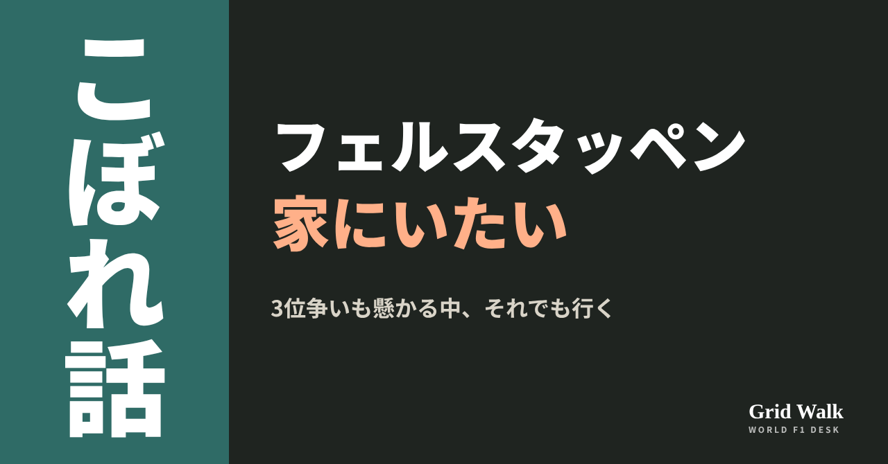<button class="cp dl" data-img="img/verstappen-qatar-rather-home-20261124.png" data-name="verstappen-qatar-rather-home-20261124_見出し画像.png">ダウンロード</button></li>
<li class="st"><div class="hd"><span class="no">2</span><b>タイトル</b></div><div class="bx" id="p1t">フェルスタッペン、カタールを前に「家にいたい」　それでも行く理由</div><button class="cp" data-plain="p1t">タイトルをコピー</button></li>
<li class="st"><div class="hd"><span class="no">3</span><b>本文</b></div><div class="bx tall" id="p1r"><p>カタールとアブダビの最終2戦を前に、レッドブルのマックス・フェルスタッペンが「家にいたいよ」と口にしました。ドイツのMotorsport-Totalが11月23日に伝えた話です。F1とFIAの安全の保証は信じている。それでも、気持ちは落ち着かないといいます。サイトの要約は https://f1gridwalk.github.io/news/de-motorsporttotal-verstappen-katar-lieber-zuhause/ にあります。</p><p>元の記事と要約へのリンク、中東の最終2戦をめぐるこれまでのコラムへの案内はサイトで → <a href="https://f1gridwalk.github.io/lens/verstappen-qatar-rather-home-20261124/?utm_source=note&amp;utm_campaign=verstappen-qatar-rather-home-20261124">https://f1gridwalk.github.io/lens/verstappen-qatar-rather-home-20261124/?utm_source=note&amp;utm_campaign=verstappen-qatar-rather-home-20261124</a></p><h2>保証は信じる、でも落ち着かない</h2><p>記事によると、まずラスベガスのパドックで、オランダ版Motorsport.comの質問にこう答えました。</p><blockquote><p>「個人的な話し合いでも保証をもらっているから、すべての情報は正しいと考えるしかない」「反対することもできる。でも、結局それも何にもならない」「とにかく、すべてうまくいくことを願っている」（フェルスタッペン、Motorsport-Total／ドイツ。オランダ版Motorsport.comの取材）</p></blockquote><p>保証を信じることと、自分がどう感じるかは別ではないか。オランダの記者たちとの囲み取材でそう向けられると、こう続けました。</p><blockquote><p>「落ち着いていられるか？　いや！　家にいたいよ」「でも、安全だというあらゆる保証をもらっているなら、僕から言える悪いことは多くない」「でも、左や右や南の国で、まだロケットが飛んでいるのは気持ちのいいことか？　いや、まったく気持ちのいいことじゃない」（フェルスタッペン、Motorsport-Total／ドイツ。オランダの記者たちの囲み取材）</p></blockquote><blockquote><p>「何かが起きる可能性はあるか？　もちろん、ある。でも、ここラスベガスで何かが起きる可能性もある」「いつでもそういう見方はできる。ただ、向こうでは危険が少し身近にあるかもしれない、というだけだ」（フェルスタッペン、Motorsport-Total／ドイツ）</p></blockquote><h2>できればイモラで</h2><p>Motorsport-Totalによると、F1は予備の開催地だったイモラに開催は要らないと伝え、今季を予定どおり中東で終えることにしました。F1は、安全の状況が悪くなれば正しいことをすると、これまで強調してきたとも記事は書いています。</p><p>フェルスタッペン自身は、中東へ行くより、イモラでのレースのほうがよかったそうです。ほかの何人かのドライバーも同じ願いだった、と記事は書いています。</p><h2>それでも行く理由は3位</h2><p>それでもフェルスタッペンは現地へ向かいます。記事は理由の一つに、コンストラクターズ選手権の3位がレッドブルにまだ懸かっていることを挙げています。F1公式の順位では、レッドブルは440点で3位、4位のマクラーレンは431点で、差は9点です。ラスベガスGPはフェルスタッペンが優勝し、マクラーレンはランド・ノリスが2位、オスカー・ピアストリが3位でした（F1公式）。</p><p>MotoGPでは、選手権でもう目標のなかったヤマハが、カタールの週末をボイコットしました（Motorsport-Total）。レッドブルに懸かるものがなかったら行くのをやめたか、と聞かれると、フェルスタッペンはこう答えています。</p><blockquote><p>「それは、いつも言いにくい」「それに、もちろんMotoGPは、状況がまだ少し不安定だった週に、もっと早く向こうへ行かなければならなかった」（フェルスタッペン、Motorsport-Total／ドイツ）</p></blockquote><p>編集部としては、開くかどうかはF1とFIAに任せ、自分の気持ちは別にはっきり口にする、という線の引き方だと見ています。第22戦カタールGPは11月27〜29日、最終戦のアブダビGPは12月4〜6日です（F1公式）。これまでの経緯はコラム https://f1gridwalk.github.io/lens/qatar-abu-dhabi-wolff-stay-home-20261109/ と https://f1gridwalk.github.io/lens/finale-imola-standby-20261105/ で。</p><p><strong>安全の保証は信じつつ、気持ちは「家にいたい」。フェルスタッペンのこの言葉を、あなたはどう受け止めますか？</strong></p><p>━━━━━━━━━━</p><p><strong>F1 Grid Walk では、世界のF1ニュースを毎日日本語でまとめています。</strong></p><p>海外の記事の要約を、毎日載せています。</p><p><a href="https://f1gridwalk.github.io/">https://f1gridwalk.github.io/</a></p><p>ほかの海外記事も読みたい方は、F1 Grid Walkへ。</p><p><a href="https://f1gridwalk.github.io/lens/verstappen-qatar-rather-home-20261124/">https://f1gridwalk.github.io/lens/verstappen-qatar-rather-home-20261124/</a></p><p>━━━━━━━━━━</p><p><a href="https://www.motorsport-total.com/formel-1/news/max-verstappen-mit-deutlicher-ansage-vor-katar-ich-waere-lieber-zu-hause-26112319">出典：Motorsport-Total（ドイツ）</a></p><p><a href="https://www.formula1.com/en/results/2026/team">出典：F1公式サイト（イギリス）</a></p><p><a href="https://www.formula1.com/en/results/2026/races/1300/las-vegas/race-result">出典：F1公式サイト（イギリス）</a></p><p><a href="https://www.formula1.com/en/racing/2026">出典：F1公式サイト（イギリス）</a></p></div><button class="cp" data-rich="p1r">本文をコピー</button></li>
<li class="st"><div class="hd"><span class="no">4</span><b>ハッシュタグ</b></div><div class="bx" id="p1h">#F1 #F1jp #フェルスタッペン #レッドブル #カタールGP #アブダビGP #F1こぼれ話 #OFFGRID</div><button class="cp" data-plain="p1h">タグをコピー</button></li>
</ol><h3 class="xh">X</h3><ol class="steps">
<li class="st im"><div class="hd"><b>X用の画像</b><em>画像</em></div>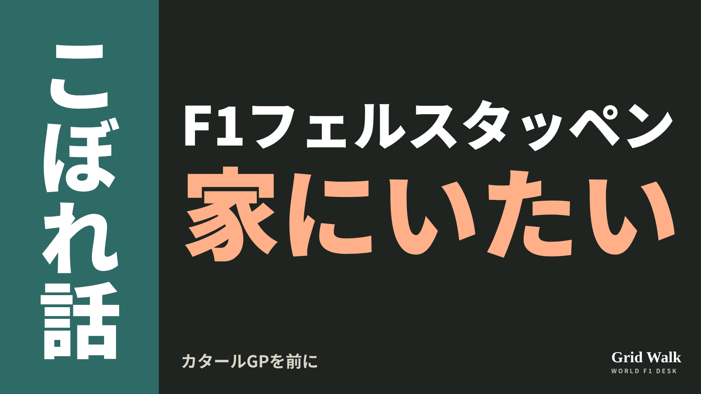<button class="cp dl" data-img="img/x_verstappen-qatar-rather-home-20261124.png" data-name="x_verstappen-qatar-rather-home-20261124.png">ダウンロード</button></li>
<li class="st"><div class="hd"><b>① noteをシェアするときの文</b></div><div class="bx" id="p1x0">最終2戦のカタールとアブダビを前に、フェルスタッペンが「家にいたい」と本音。F1とFIAの安全の保証は信じていると話しています。noteにまとめました #F1jp #フェルスタッペン #カタールGP</div><button class="cp" data-plain="p1x0">コピー</button></li>
<li class="st"><div class="hd"><b>② ①への返信</b></div><div class="bx" id="p1x1">ほかの海外記事も読みたい方は、F1 Grid Walkへ。
https://f1gridwalk.github.io/lens/verstappen-qatar-rather-home-20261124/?utm_source=x&amp;utm_campaign=verstappen-qatar-rather-home-20261124</div><button class="cp" data-plain="p1x1">コピー</button></li>
<li class="st"><div class="hd"><b>③ ②への返信</b></div><div class="bx" id="p1x2">毎日の海外F1ニュースは、日本語でこちらにまとめています。
https://f1gridwalk.github.io/</div><button class="cp" data-plain="p1x2">コピー</button></li>
</ol></section><section class="part" id="p2"><h2><span class="tag">OFF GRID</span>ベアマン「新しく言うことは何もない」　契約は給料で足踏みと報道</h2><p class="sub">サイトに公開：11:47</p><ol class="steps">
<li class="st im"><div class="hd"><span class="no">1</span><b>見出し画像</b><em>画像</em></div>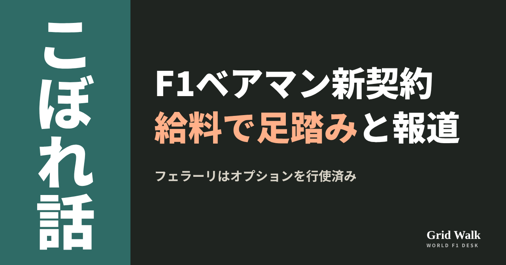<button class="cp dl" data-img="img/bearman-haas-salary-stall-20261124.png" data-name="bearman-haas-salary-stall-20261124_見出し画像.png">ダウンロード</button></li>
<li class="st"><div class="hd"><span class="no">2</span><b>タイトル</b></div><div class="bx" id="p2t">ベアマン「新しく言うことは何もない」　契約は給料で足踏みと報道</div><button class="cp" data-plain="p2t">タイトルをコピー</button></li>
<li class="st"><div class="hd"><span class="no">3</span><b>本文</b></div><div class="bx tall" id="p2r"><p>ラスベガスGPを終えても、ハースのオリバー・ベアマンの2027年の契約は発表されていません。ブラジルのグランデ・プレミオは11月23日、Motorsport.comのイタリア版の情報として、話を止めているのは給料の条件だと報じました。ドイツのMotorsport-Totalも、姉妹サイトのMotorsport.comの情報として同じ内容を伝えています。</p><p>ドイツとブラジルの元の記事と、ベアマンの契約を追ったこれまでのコラムへのリンクはサイトで → <a href="https://f1gridwalk.github.io/lens/bearman-haas-salary-stall-20261124/?utm_source=note&amp;utm_campaign=bearman-haas-salary-stall-20261124">https://f1gridwalk.github.io/lens/bearman-haas-salary-stall-20261124/?utm_source=note&amp;utm_campaign=bearman-haas-salary-stall-20261124</a></p><p>グランデ・プレミオが取材したラスベガスの会見で、ベアマンはこう話しました。</p><blockquote><p>「新しく言うことは何もない」（ベアマン、Grande Prêmio／ブラジル）</p></blockquote><p>Motorsport-Totalによると、2027年のF1の顔ぶれで、まだ契約を手にしていないのはベアマンだけです。</p><h2>止めているのはフェラーリではない</h2><p>両紙によると、フェラーリはすでに、ベアマンを育成ドライバーとして手元に残すオプションを使っています。グランデ・プレミオは、2027年も育成の枠に残すためのものだとしています。</p><p>2027年の終わりにフェラーリの本チームの席がなければ、両者が別れる可能性はあるものの、ハースとの交渉の妨げにはならないといいます。</p><p>引っかかっているのは、ハースとベアマンの側の間だと両紙は報じました。ベアマンの側は、ハースが示した給料が期待に届かないと見ていて、Motorsport-Totalは、話し合いが張りつめたものになっていると書いています。額は、どちらの記事にも出ていません。</p><p>Motorsport-Totalは、遅れの理由としては、フェラーリとの契約や、ベアマンのもっと先の将来に関わる見方もあったものの、本当の妨げはハースとのお金の条件だと書いています（11月19日のコラム https://f1gridwalk.github.io/lens/bearman-2027-contract-wait-20261119/ ）。10月には年俸の額をめぐる話が出て、小松礼雄代表が否定しています（10月31日のコラム https://f1gridwalk.github.io/lens/komatsu-bearman-rumours-20261031/ ）。</p><h2>どちらにも代わりの道はない</h2><p>Motorsport-Totalは、ベアマンがハースを必要とするのと同じくらい、ハースもベアマンを必要としていると書いています。グランデ・プレミオも、どちらにも来年の代わりの案がないため、対立が解ける見込みはずっと大きくなると伝えました。同紙は、RacingNews365がアルピーヌを候補に挙げたことにも触れていますが、ベアマンはラスベガスで、ほかのチームへ移る可能性をきっぱり否定しました。</p><blockquote><p>「2027年の目標は、はっきりしている」「ここには、まだやり残したことがあると思う」（ベアマン、Motorsport-Total／ドイツ）</p></blockquote><blockquote><p>「もちろん、ドライバーの自信のようなものにとっては、理想的ではない」（ベアマン、Grande Prêmio／ブラジル）</p></blockquote><p>Motorsport-Totalによると、どちらも先に折れたくはないものの、Motorsport.comは、最終戦アブダビGPの前に、お金の面で歩み寄って決着すると見ています。2027年は、ラファエル・カマラと組むことになるといいます。</p><p>F1公式によると、ベアマンはラスベガスGPを13位で終え、点はありませんでした。ドライバーズ選手権は13位、23点です。残りは第22戦カタールGP（11月27〜29日）と、第23戦アブダビGP（12月4〜6日）の2戦です。</p><p>編集部としては、報道どおりなら、話は席があるかどうかではなく、どんな条件で乗るかに絞られたと見ています。ただ、両紙の記事には、給料についてのハースやベアマン本人の言葉は出ていません。ハースが持つとされるオプションの仕組みは https://f1gridwalk.github.io/deep/rules/contract-option/ で。サイトの要約は https://f1gridwalk.github.io/news/de-motorsporttotal-bearman-haas-gehalt/ と https://f1gridwalk.github.io/news/pt-gp-bearman-haas-impasse-salarial/ にあります。</p><p><strong>ハースとベアマンの側、先に歩み寄るのはどちらだと思いますか？</strong></p><p>━━━━━━━━━━</p><p><strong>F1 Grid Walk では、世界のF1ニュースを毎日日本語でまとめています。</strong></p><p>海外の記事の要約を、毎日載せています。</p><p><a href="https://f1gridwalk.github.io/">https://f1gridwalk.github.io/</a></p><p>ほかの海外記事も読みたい方は、F1 Grid Walkへ。</p><p><a href="https://f1gridwalk.github.io/lens/bearman-haas-salary-stall-20261124/">https://f1gridwalk.github.io/lens/bearman-haas-salary-stall-20261124/</a></p><p>━━━━━━━━━━</p><p><a href="https://www.motorsport-total.com/formel-1/news/ferrari-hat-option-gezogen-gehaltsstreit-bremst-bearman-deal-bei-haas-26112315">出典：Motorsport-Total.com（ドイツ）</a></p><p><a href="https://grandepremio.com/br/f1/bearman-vive-impasse-salarial-com-haas-em-negociacao-por-novo-contrato-na-f1/">出典：Grande Prêmio（ブラジル）</a></p><p><a href="https://www.formula1.com/en/results/2026/races/1300/las-vegas/race-result">出典：F1公式サイト（イギリス）</a></p><p><a href="https://www.formula1.com/en/results/2026/drivers">出典：F1公式サイト（イギリス）</a></p><p><a href="https://www.formula1.com/en/racing/2026">出典：F1公式サイト（イギリス）</a></p></div><button class="cp" data-rich="p2r">本文をコピー</button></li>
<li class="st"><div class="hd"><span class="no">4</span><b>ハッシュタグ</b></div><div class="bx" id="p2h">#F1 #F1jp #ベアマン #ハース #フェラーリ #小松礼雄 #ラスベガスGP #F1移籍 #F1こぼれ話 #OFFGRID</div><button class="cp" data-plain="p2h">タグをコピー</button></li>
</ol><h3 class="xh">X</h3><ol class="steps">
<li class="st im"><div class="hd"><b>X用の画像</b><em>画像</em></div>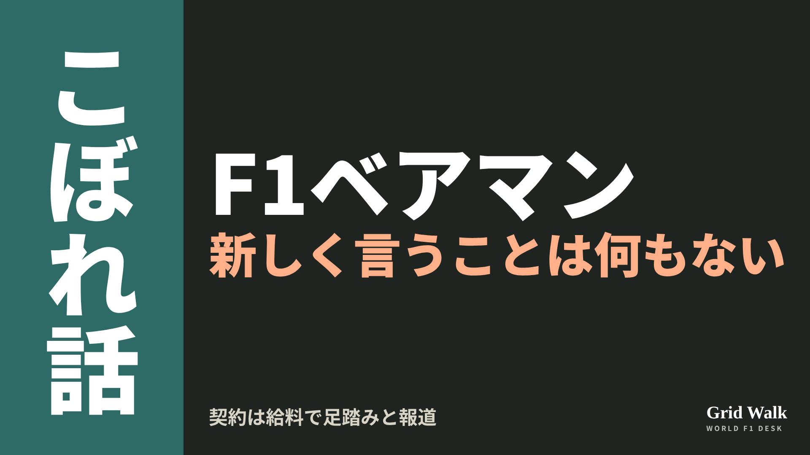<button class="cp dl" data-img="img/x_bearman-haas-salary-stall-20261124.png" data-name="x_bearman-haas-salary-stall-20261124.png">ダウンロード</button></li>
<li class="st"><div class="hd"><b>① noteをシェアするときの文</b></div><div class="bx" id="p2x0">ハースのベアマンの2027年の契約は、まだ発表されていません。ブラジルのグランデ・プレミオは、止めているのは給料の条件だと報じました。本人は「新しく言うことは何もない」。noteにまとめました #F1jp #ベアマン #ハース</div><button class="cp" data-plain="p2x0">コピー</button></li>
<li class="st"><div class="hd"><b>② ①への返信</b></div><div class="bx" id="p2x1">ほかの海外記事も読みたい方は、F1 Grid Walkへ。
https://f1gridwalk.github.io/lens/bearman-haas-salary-stall-20261124/?utm_source=x&amp;utm_campaign=bearman-haas-salary-stall-20261124</div><button class="cp" data-plain="p2x1">コピー</button></li>
<li class="st"><div class="hd"><b>③ ②への返信</b></div><div class="bx" id="p2x2">毎日の海外F1ニュースは、日本語でこちらにまとめています。
https://f1gridwalk.github.io/</div><button class="cp" data-plain="p2x2">コピー</button></li>
</ol></section><section class="part" id="p3"><h2><span class="tag">OFF GRID</span>エンジン供給に上限案　独誌は6社合意、伊サイトは話し合いまだと</h2><p class="sub">サイトに公開：11:48</p><ol class="steps">
<li class="st im"><div class="hd"><span class="no">1</span><b>見出し画像</b><em>画像</em></div>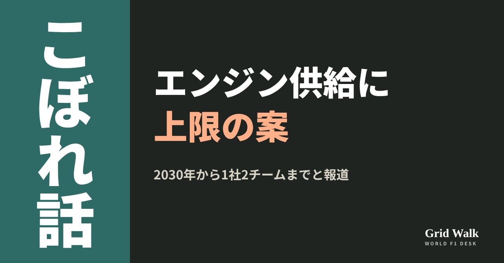<button class="cp dl" data-img="img/pu-supply-limit-2030-20261124.png" data-name="pu-supply-limit-2030-20261124_見出し画像.png">ダウンロード</button></li>
<li class="st"><div class="hd"><span class="no">2</span><b>タイトル</b></div><div class="bx" id="p3t">エンジン供給に上限案　独誌は6社合意、伊サイトは話し合いまだと</div><button class="cp" data-plain="p3t">タイトルをコピー</button></li>
<li class="st"><div class="hd"><span class="no">3</span><b>本文</b></div><div class="bx tall" id="p3r"><p>2030年から、1つのエンジンメーカーがパワーユニットを渡せるチームの数を絞る。そんな案を、ドイツのMotorsport-TotalとイタリアのFormula1.itが11月23日に伝えました。ただ、進み具合の書き方はかなり違います。サイトの要約は https://f1gridwalk.github.io/news/de-motorsporttotal-2030-zwei-teams-pro-hersteller/ と https://f1gridwalk.github.io/news/it-formula1it-fia-2030-un-team-cliente/ にあります。</p><p>2つの記事の要約と、カスタマーチームなど関係する用語の解説はサイトで → <a href="https://f1gridwalk.github.io/lens/pu-supply-limit-2030-20261124/?utm_source=note&amp;utm_campaign=pu-supply-limit-2030-20261124">https://f1gridwalk.github.io/lens/pu-supply-limit-2030-20261124/?utm_source=note&amp;utm_campaign=pu-supply-limit-2030-20261124</a></p><h2>6社が合意か、まだ話し合いもないか</h2><p>Motorsport-Totalは、Motorsport.comの取材として、各メーカーは原則として自分のワークスチーム（ https://f1gridwalk.github.io/deep/rules/works-team/ ）を含めて2チームまでしか供給できなくなると報じました。この上限は、新しい規則の大筋で合意した6つのエンジンメーカーの間の取り決めの一部だといいます。ただし公の発表はまだで、世界モータースポーツ評議会（ https://f1gridwalk.github.io/deep/rules/wmsc/ ）の承認が要り、判断は来月上海で開かれる会合で見込まれ、それまでは最終的な規則ではない、とも書いています。</p><p>一方のFormula1.itは、ラスベガスのパドックで、メーカーが持てる顧客のチームは多くて1つになるといううわさが出たと伝えました。そのうえで、RacingNews365によれば、この件はまだ話し合われていないとも書いています。</p><p>自分のチームと顧客1チームなら、数はどちらも2チームです。違うのは言い方と進み具合です。</p><h2>メルセデスの3つの顧客</h2><p>Motorsport-Totalによると、フェラーリはハースとキャデラックに、レッドブル・パワートレインズ（ https://f1gridwalk.github.io/deep/rules/red-bull-powertrains/ ）はレッドブルとレーシングブルズに供給していて、すでに上限の中に収まります。問題はマクラーレン、ウィリアムズ、アルピーヌの3チームに供給するメルセデスで、案のとおりなら、このうち2チームは2030年に向けて別の相手を探さなければなりません。とくに難しいのは、ルノーが自前のF1エンジンをやめたばかりのアルピーヌだと記事は書いています。</p><p>マクラーレンのザク・ブラウンCEOは、ラスベガスで自前のエンジンの可能性についてこう話しました。</p><blockquote><p>「過去に検討したことはあるけれど、HPPにはとても満足している」「だから、クルマの後ろにメルセデス以外のものを載せるつもりはない」（ブラウン、Motorsport-Total／ドイツ）</p></blockquote><p>HPPはメルセデスのエンジン部門です（ https://f1gridwalk.github.io/deep/rules/mercedes-hpp/ ）。Formula1.itは、いちばん大きな代償を払うのはこの3チームで、アウディ、ホンダ、ゼネラルモーターズの中から新しい供給元を探すことになると書きました。供給は大きな収入になり、政治やスポーツの面のつながりも生むため反対は多いだろうとし、トト・ウォルフも通さないよう何でもするだろう、と見ています。</p><h2>ねらいは影響力と赤字</h2><p>Motorsport-Totalは理由を2つ挙げています。1つは、1社の政治的な力を抑えること。もう1つは、顧客への供給がメーカーにとって赤字の仕事だとされていることです。顧客に請求できる額は、1シーズン1800万ドルが上限です（カスタマーチームは https://f1gridwalk.github.io/deep/rules/customer-team/ ）。</p><p>逃げ道もあるといいます。供給元が見つからないチームが出たら、FIAはメーカーに例外として3チーム目への供給を求められる。撤退するメーカーが出たら、そのエンジンの知的財産をFIAに移せる。メーカーの予算上限（ https://f1gridwalk.github.io/deep/rules/pu-cost-cap/ ）は2030年に1億9000万ドルで、2034年には1億6000万ドルまで下がる、とも記事は書いています。</p><p>編集部としては、2チームという数そのものより、3チーム目の例外がどこまで認められるかが実際の線引きになると見ています。メルセデスの顧客のうち2チームは、新しい相手かその例外に頼ることになるからです。</p><p><strong>供給が1社2チームまでになったら、メルセデスと組み続けるのはどのチームだと思いますか？</strong></p><p>━━━━━━━━━━</p><p><strong>F1 Grid Walk では、世界のF1ニュースを毎日日本語でまとめています。</strong></p><p>海外の記事の要約を、毎日載せています。</p><p><a href="https://f1gridwalk.github.io/">https://f1gridwalk.github.io/</a></p><p>ほかの海外記事も読みたい方は、F1 Grid Walkへ。</p><p><a href="https://f1gridwalk.github.io/lens/pu-supply-limit-2030-20261124/">https://f1gridwalk.github.io/lens/pu-supply-limit-2030-20261124/</a></p><p>━━━━━━━━━━</p><p><a href="https://www.motorsport-total.com/formel-1/news/formel-1-plant-motoren-hammer-2030-nur-noch-ein-kundenteam-erlaubt-26112304">出典：Motorsport-Total.com（ドイツ）</a></p><p><a href="https://www.formula1.it/news/34182/1/la-fia-prepara-una-stretta-per-i-motoristi-l-indiscrezione-sul-2030">出典：Formula1.it（イタリア）</a></p></div><button class="cp" data-rich="p3r">本文をコピー</button></li>
<li class="st"><div class="hd"><span class="no">4</span><b>ハッシュタグ</b></div><div class="bx" id="p3h">#F1 #F1jp #パワーユニット #2030年規則 #メルセデス #マクラーレン #ウィリアムズ #アルピーヌ #F1こぼれ話 #OFFGRID</div><button class="cp" data-plain="p3h">タグをコピー</button></li>
</ol><h3 class="xh">X</h3><ol class="steps">
<li class="st im"><div class="hd"><b>X用の画像</b><em>画像</em></div>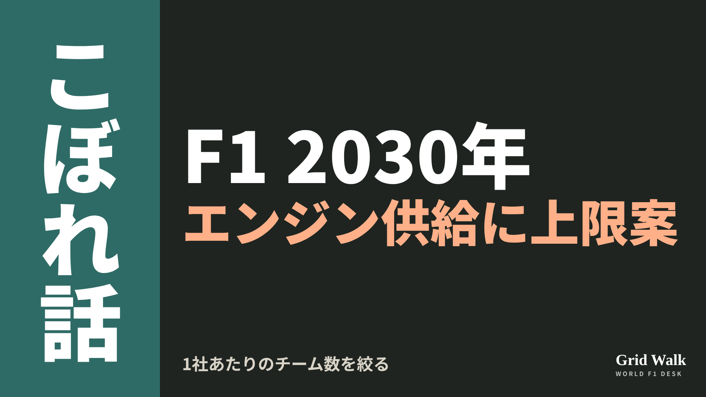<button class="cp dl" data-img="img/x_pu-supply-limit-2030-20261124.png" data-name="x_pu-supply-limit-2030-20261124.png">ダウンロード</button></li>
<li class="st"><div class="hd"><b>① noteをシェアするときの文</b></div><div class="bx" id="p3x0">2030年から、1つのエンジンメーカーが供給できるチームの数に上限を設ける案が報じられました。独Motorsport-Totalは6社が合意と伝え、伊Formula1.itはまだ話し合いもないと伝えています。noteにまとめました #F1jp</div><button class="cp" data-plain="p3x0">コピー</button></li>
<li class="st"><div class="hd"><b>② ①への返信</b></div><div class="bx" id="p3x1">ほかの海外記事も読みたい方は、F1 Grid Walkへ。
https://f1gridwalk.github.io/lens/pu-supply-limit-2030-20261124/?utm_source=x&amp;utm_campaign=pu-supply-limit-2030-20261124</div><button class="cp" data-plain="p3x1">コピー</button></li>
<li class="st"><div class="hd"><b>③ ②への返信</b></div><div class="bx" id="p3x2">毎日の海外F1ニュースは、日本語でこちらにまとめています。
https://f1gridwalk.github.io/</div><button class="cp" data-plain="p3x2">コピー</button></li>
</ol></section><section class="part" id="p4"><h2><span class="tag">OFF GRID</span>フェラーリ、ルクレールに内部の処分か　罰金も排除せずと報道</h2><p class="sub">サイトに公開：11:49</p><ol class="steps">
<li class="st im"><div class="hd"><span class="no">1</span><b>見出し画像</b><em>画像</em></div>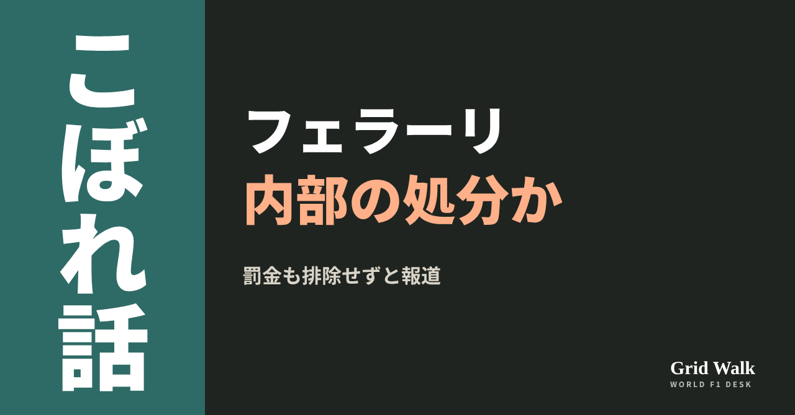<button class="cp dl" data-img="img/ferrari-leclerc-internal-sanction-20261124.png" data-name="ferrari-leclerc-internal-sanction-20261124_見出し画像.png">ダウンロード</button></li>
<li class="st"><div class="hd"><span class="no">2</span><b>タイトル</b></div><div class="bx" id="p4t">フェラーリ、ルクレールに内部の処分か　罰金も排除せずと報道</div><button class="cp" data-plain="p4t">タイトルをコピー</button></li>
<li class="st"><div class="hd"><span class="no">3</span><b>本文</b></div><div class="bx tall" id="p4r"><p>ラスベガスGPでチームメイトのルイス・ハミルトンに接触したシャルル・ルクレールについて、フェラーリがチームの中での処分を検討していると、ブラジルのGrande Prêmioが11月23日、イタリアのLa Gazzetta dello Sportを引いて伝えました。対象は主にルクレールで、罰金も排除されていないといいます。</p><p>元の記事へのリンクと、レース直後の代表の言葉やルクレールの謝罪を伝えたコラムはサイトで → <a href="https://f1gridwalk.github.io/lens/ferrari-leclerc-internal-sanction-20261124/?utm_source=note&amp;utm_campaign=ferrari-leclerc-internal-sanction-20261124">https://f1gridwalk.github.io/lens/ferrari-leclerc-internal-sanction-20261124/?utm_source=note&amp;utm_campaign=ferrari-leclerc-internal-sanction-20261124</a></p><p>同紙の伝えでは、ルクレールは罰金に加えて、より重い内部の処分を受ける可能性もあるといいます。イタリアのCorriere della Seraによると、フレデリック・バスール代表はカタールへ向かう前に、2人とあらためて話をしたといいます。</p><p>F1公式の結果では、ルクレールは衝突を起こしたとして10秒加算で10位・1点、ハミルトンは7位でした。レース直後の3人の言葉は https://f1gridwalk.github.io/lens/ferrari-leclerc-hamilton-contact-20261122/ 、謝罪は https://f1gridwalk.github.io/lens/leclerc-apology-maranello-20261123/ で紹介しています。Grande Prêmioによると、バスールはレース後、記者にこうも話していました。</p><blockquote><p>「2000人の懸命な仕事を、こんなふうに台無しにすることはできない」（バスール、Grande Prêmio／ブラジル）</p></blockquote><h2>前例は2016年のメルセデス</h2><p>同サイトはGazzettaの伝えとして、フェラーリが2016年のメルセデスにならう可能性もあると書いています。ハミルトンとニコ・ロズベルグが争っていた年です。当時、トト・ウォルフ代表はニキ・ラウダの助言のもとで、解雇までちらつかせて、接触の厳しい決まりを作りました。壊した分をドライバーに払わせる中身もあったといいます。ウォルフの当時の言葉です。</p><blockquote><p>「はっきりした決まりを作り、自分たちのしていることを本気で受け止めさせるには、それしかなかった」（ウォルフ、Grande Prêmio／ブラジル）</p></blockquote><p>メルセデスの決まりをめぐるロズベルグの話は https://f1gridwalk.github.io/lens/rosberg-ferrari-unclear-rules-20261107/ で紹介しています。</p><h2>記者トゥリーニは、会長と代表にも問う</h2><p>イタリアのジャーナリスト、レオ・トゥリーニは、処分より根の深いところを見ています。Formula1.itが11月23日に伝えたもので、元はトゥリーニがQuotidiano Nazionaleのブログに11月22日に書いた文章です。</p><blockquote><p>「2人の関係は、もう何か月も、最低限のところまで細っている」（トゥリーニ、Formula1.it／イタリア）</p></blockquote><p>トゥリーニは、メキシコのときのように同じ目標に向かうと確かめ合っても、実を結んでいないと見ます。接近戦の多いレースで互いを傷つけ合ったのはフェラーリの2人だけで、前はどうせほかのチームだから、と片づけるのはまちがい。タイトルを争える車になったときが心配だ、という見立てです。</p><blockquote><p>「カルレットと准男爵は、本当に一つ屋根の下で暮らせるのか」（トゥリーニ、Formula1.it／イタリア）</p></blockquote><p>カルレットはルクレール、准男爵はハミルトンのことです。矛先は上にも向かい、バスールは高給のドライバーたちにさえ指示を聞いてもらえず、「鉄の壺の間の土の壺」になりかねないと書きました。</p><blockquote><p>「ハミルトンをイタリアに強く望んだジョン・エルカーン会長は、何も言うことはないのか。この状況が気に入っているのか」「いや、本当に。このままでは先に進めない」（トゥリーニ、Formula1.it／イタリア）</p></blockquote><p>サイトの要約は https://f1gridwalk.github.io/news/pt-gp-ferrari-sancoes-internas-leclerc/ と https://f1gridwalk.github.io/news/it-formula1it-turrini-leclerc-hamilton-convivere/ にあります。</p><p>編集部としては、処分の話が表に出たこと自体が、残るカタールとアブダビの2戦に向けた2人への強いメッセージになると見ています。ただ、トゥリーニが問うたのは、罰金では片づかない、だれがチームをまとめるのかという点です。</p><p><strong>ドライバーへの処分と、チームの上の責任。フェラーリがまず手をつけるべきなのは、どちらだと思いますか？</strong></p><p>━━━━━━━━━━</p><p><strong>F1 Grid Walk では、世界のF1ニュースを毎日日本語でまとめています。</strong></p><p>海外の記事の要約を、毎日載せています。</p><p><a href="https://f1gridwalk.github.io/">https://f1gridwalk.github.io/</a></p><p>ほかの海外記事も読みたい方は、F1 Grid Walkへ。</p><p><a href="https://f1gridwalk.github.io/lens/ferrari-leclerc-internal-sanction-20261124/">https://f1gridwalk.github.io/lens/ferrari-leclerc-internal-sanction-20261124/</a></p><p>━━━━━━━━━━</p><p><a href="https://grandepremio.com/br/f1/ferrari-avalia-sancoes-internas-apos-incidente-entre-leclerc-e-hamilton-no-gp-de-las-vegas/">出典：Grande Prêmio（ブラジル）</a></p><p><a href="https://www.formula1.it/news/34192/1/leclerc-hamilton-turrini-lancia-la-provocazione-possono-convivere">出典：Formula1.it（イタリア）</a></p><p><a href="https://www.quotidiano.net/blog/turrini/leclerc-hamilton-cosi-non-si-puo-andare-avanti-5.9751">出典：Quotidiano Nazionale（ブログ Profondo Rosso）（イタリア）</a></p><p><a href="https://www.formula1.com/en/results/2026/races/1300/las-vegas/race-result">出典：F1公式サイト（イギリス）</a></p><p><a href="https://www.formula1.com/en/racing/2026">出典：F1公式サイト（イギリス）</a></p></div><button class="cp" data-rich="p4r">本文をコピー</button></li>
<li class="st"><div class="hd"><span class="no">4</span><b>ハッシュタグ</b></div><div class="bx" id="p4h">#F1 #F1jp #フェラーリ #ルクレール #ハミルトン #バスール #メルセデス #ラスベガスGP #F1こぼれ話 #OFFGRID</div><button class="cp" data-plain="p4h">タグをコピー</button></li>
</ol><h3 class="xh">X</h3><ol class="steps">
<li class="st im"><div class="hd"><b>X用の画像</b><em>画像</em></div>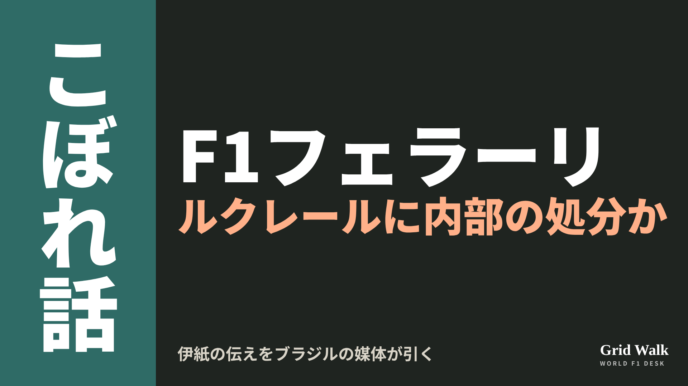<button class="cp dl" data-img="img/x_ferrari-leclerc-internal-sanction-20261124.png" data-name="x_ferrari-leclerc-internal-sanction-20261124.png">ダウンロード</button></li>
<li class="st"><div class="hd"><b>① noteをシェアするときの文</b></div><div class="bx" id="p4x0">ハミルトンに接触したルクレールに、フェラーリがチームの中での処分を検討していると、伊紙ガゼッタを引いてブラジルのGrande Prêmioが伝えました。罰金も排除されていないといいます。noteにまとめました #F1jp #フェラーリ #ルクレール</div><button class="cp" data-plain="p4x0">コピー</button></li>
<li class="st"><div class="hd"><b>② ①への返信</b></div><div class="bx" id="p4x1">ほかの海外記事も読みたい方は、F1 Grid Walkへ。
https://f1gridwalk.github.io/lens/ferrari-leclerc-internal-sanction-20261124/?utm_source=x&amp;utm_campaign=ferrari-leclerc-internal-sanction-20261124</div><button class="cp" data-plain="p4x1">コピー</button></li>
<li class="st"><div class="hd"><b>③ ②への返信</b></div><div class="bx" id="p4x2">毎日の海外F1ニュースは、日本語でこちらにまとめています。
https://f1gridwalk.github.io/</div><button class="cp" data-plain="p4x2">コピー</button></li>
</ol></section><section class="part" id="p5"><h2><span class="tag">OFF GRID</span>ガスリー「表彰台はあった」　熱で約45周、出力を絞って5位</h2><p class="sub">サイトに公開：11:50</p><ol class="steps">
<li class="st im"><div class="hd"><span class="no">1</span><b>見出し画像</b><em>画像</em></div>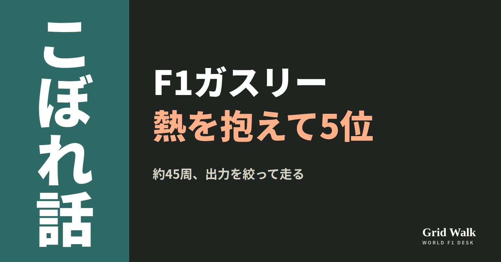<button class="cp dl" data-img="img/gasly-engine-heat-fifth-20261124.png" data-name="gasly-engine-heat-fifth-20261124_見出し画像.png">ダウンロード</button></li>
<li class="st"><div class="hd"><span class="no">2</span><b>タイトル</b></div><div class="bx" id="p5t">ガスリー「表彰台はあった」　熱で約45周、出力を絞って5位</div><button class="cp" data-plain="p5t">タイトルをコピー</button></li>
<li class="st"><div class="hd"><span class="no">3</span><b>本文</b></div><div class="bx tall" id="p5r"><p>ラスベガスGPで5位に入ったアルピーヌのピエール・ガスリーは、レースの半分以上を、エンジンの熱を抑えながら走っていました。F1公式サイトとイタリアのFormula1.itが11月23日、その舞台裏を伝えています。ガスリー本人は、もっと上に行けたと感じています。</p><p>元の記事へのリンクと、ガスリーのラスベガスの週末を追った読み解きはサイトで → <a href="https://f1gridwalk.github.io/lens/gasly-engine-heat-fifth-20261124/?utm_source=note&amp;utm_campaign=gasly-engine-heat-fifth-20261124">https://f1gridwalk.github.io/lens/gasly-engine-heat-fifth-20261124/?utm_source=note&amp;utm_campaign=gasly-engine-heat-fifth-20261124</a></p><blockquote><p>「あの時点では、もしかしたら優勝を争えるくらいのペースがあると本当に感じていた」（ガスリー、F1公式サイト）</p></blockquote><h2>3番手に上がったときの無線</h2><p>F1公式サイトによると、ガスリーは「スタートではすごく速かった」と話し、3番手まで順位を上げました。そこで無線で、クルマが過熱しているので出力を落とすよう伝えられたといいます。本人の説明では、出力を落としたのは45周。いちばん強く冷やす設定に切り替えた周には、1周で2つ順位を落としました。前のクルマの真後ろにつけられても、冷やすためにあえて間を空けたとも話しています。</p><blockquote><p>「いちばん遅いエンジンモードでは、1周に1秒以上失っていたと思う」（ガスリー、F1公式サイト）</p></blockquote><p>Formula1.itは、この問題が今季でもっとも寒いレースの一つで起き、本人もチームも予想していなかったと伝えています。ガスリーも「予想できていたとは思わない」と話し、何が起きたのかをしっかり見直すとしています。どの部分が熱を持ったのかは、どちらの記事も書いていません。</p><h2>最終ラップに一度は4番手</h2><p>それでもガスリーは、チェッカーまで先頭集団に残りました。F1公式サイトによると、最終ラップにメルセデスのアンドレア・キミ・アントネッリを抜いて4番手に上がり、チェッカーの前に抜き返されています。F1公式の正式結果では、ガスリーは5位で、優勝したマックス・フェルスタッペンとの差は2.927秒、4位のアントネッリとは0.353秒差でした。チームメートのフランコ・コラピントは6位で、アルピーヌは2台で18点を加えています。</p><blockquote><p>「本当に表彰台はあったと思う。フルパワーに戻してほしいと何度も頼んだけど、許されたのは最後の2周だけだった」（ガスリー、F1公式サイト）</p></blockquote><p>それでもガスリーは、悔しくはないと強調し、チームとして今季いちばんのレースだったと話しています。マクラーレン、フェラーリ、最終ラップにはアントネッリと戦い、「あそこにいられたのはよかった」とも振り返りました。Formula1.itは、2台そろって6位以内に入ったことが、苦しい時期のあとのチームの自信になると見ています。</p><h2>残りは2戦</h2><p>F1公式のドライバーズ順位では、ガスリーは52点で10位、コラピントは35点で12位です。Formula1.itは別の記事で、コラピントがアービッド・リンドブラッドに3点差まで迫っていると書いています。次は第22戦カタールGP（11月27〜29日）、最後が第23戦アブダビGP（12月4〜6日）です。</p><p>編集部としては、出力を絞った約45周のあいだも先頭集団から離れなかったことに、今のアルピーヌのクルマの力が表れていると見ています。一方で、寒い夜に熱の問題が出たことについて、チームがどんな説明をするのかも、カタールの前に気になるところです。ガスリーの週末をレースの流れから追った読み解きは https://f1gridwalk.github.io/topics/gasly-first-points-here/ に、アルピーヌの18点とコンストラクターズ争いは https://f1gridwalk.github.io/lens/alpine-double-points-vegas-20261122/ に、Formula1.itの記事のサイトの要約は https://f1gridwalk.github.io/news/it-formula1it-gasly-motore-surriscaldamento/ にあります。</p><p><strong>チームが出力を絞らずに済んでいたら、ガスリーは表彰台に届いたと思いますか？</strong></p><p>━━━━━━━━━━</p><p><strong>F1 Grid Walk では、世界のF1ニュースを毎日日本語でまとめています。</strong></p><p>海外の記事の要約を、毎日載せています。</p><p><a href="https://f1gridwalk.github.io/">https://f1gridwalk.github.io/</a></p><p>ほかの海外記事も読みたい方は、F1 Grid Walkへ。</p><p><a href="https://f1gridwalk.github.io/lens/gasly-engine-heat-fifth-20261124/">https://f1gridwalk.github.io/lens/gasly-engine-heat-fifth-20261124/</a></p><p>━━━━━━━━━━</p><p><a href="https://www.formula1.com/en/latest/article/gasly-reveals-car-issue-in-las-vegas-as-he-felt-he-could-challenge-for-the-win.yyZX6FzglV6KSXOeQBOJN">出典：F1公式サイト（イギリス）</a></p><p><a href="https://www.formula1.it/news/34191/1/un-problema-al-motore-ha-frenato-gasly-il-retroscena-della-gara">出典：Formula1.it（イタリア）</a></p><p><a href="https://www.formula1.it/news/34194/1/da-errore-a-certezza-l-alpine-vince-la-scommessa-colapinto">出典：Formula1.it（イタリア）</a></p><p><a href="https://www.formula1.com/en/results/2026/races/1300/las-vegas/race-result">出典：F1公式サイト（イギリス）</a></p><p><a href="https://www.formula1.com/en/results/2026/drivers">出典：F1公式サイト（イギリス）</a></p><p><a href="https://www.formula1.com/en/racing/2026">出典：F1公式サイト（イギリス）</a></p></div><button class="cp" data-rich="p5r">本文をコピー</button></li>
<li class="st"><div class="hd"><span class="no">4</span><b>ハッシュタグ</b></div><div class="bx" id="p5h">#F1 #F1jp #アルピーヌ #ガスリー #コラピント #ラスベガスGP #パワーユニット #F1こぼれ話 #OFFGRID</div><button class="cp" data-plain="p5h">タグをコピー</button></li>
</ol><h3 class="xh">X</h3><ol class="steps">
<li class="st im"><div class="hd"><b>X用の画像</b><em>画像</em></div>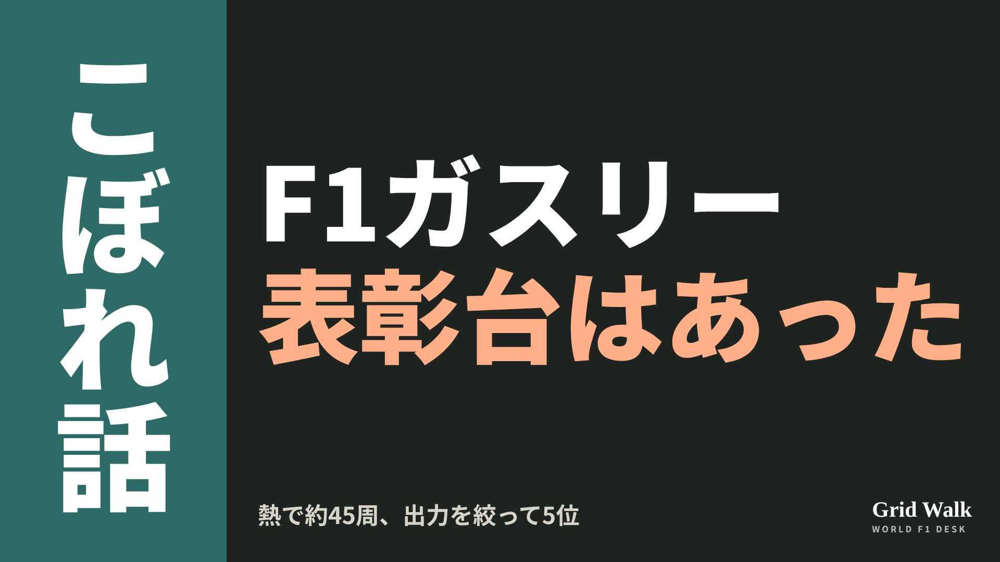<button class="cp dl" data-img="img/x_gasly-engine-heat-fifth-20261124.png" data-name="x_gasly-engine-heat-fifth-20261124.png">ダウンロード</button></li>
<li class="st"><div class="hd"><b>① noteをシェアするときの文</b></div><div class="bx" id="p5x0">ラスベガスGPで5位のガスリーは、3番手を走っていたところで過熱を伝えられ、約45周を出力を落として走りました。本人は「表彰台はあった」。noteにまとめました #F1jp #ガスリー #アルピーヌ</div><button class="cp" data-plain="p5x0">コピー</button></li>
<li class="st"><div class="hd"><b>② ①への返信</b></div><div class="bx" id="p5x1">ほかの海外記事も読みたい方は、F1 Grid Walkへ。
https://f1gridwalk.github.io/lens/gasly-engine-heat-fifth-20261124/?utm_source=x&amp;utm_campaign=gasly-engine-heat-fifth-20261124</div><button class="cp" data-plain="p5x1">コピー</button></li>
<li class="st"><div class="hd"><b>③ ②への返信</b></div><div class="bx" id="p5x2">毎日の海外F1ニュースは、日本語でこちらにまとめています。
https://f1gridwalk.github.io/</div><button class="cp" data-plain="p5x2">コピー</button></li>
</ol></section><section class="part" id="p6"><h2><span class="tag">OFF GRID</span>ハータ、F2を2戦残して離脱　ハイテックは来季の新加入を前倒し</h2><p class="sub">サイトに公開：11:51</p><ol class="steps">
<li class="st im"><div class="hd"><span class="no">1</span><b>見出し画像</b><em>画像</em></div>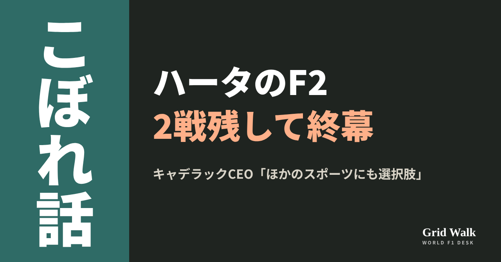<button class="cp dl" data-img="img/herta-leaves-f2-early-20261124.png" data-name="herta-leaves-f2-early-20261124_見出し画像.png">ダウンロード</button></li>
<li class="st"><div class="hd"><span class="no">2</span><b>タイトル</b></div><div class="bx" id="p6t">ハータ、F2を2戦残して離脱　ハイテックは来季の新加入を前倒し</div><button class="cp" data-plain="p6t">タイトルをコピー</button></li>
<li class="st"><div class="hd"><span class="no">3</span><b>本文</b></div><div class="bx tall" id="p6r"><p>F2のハイテックが、コルトン・ハータが残り2ラウンドを前にチームを離れると発表しました。イギリスのPlanetF1が11月23日に伝えています。記事は、双方が合意したうえでの決定だったと書いています。キャデラックF1のテストドライバーを務めながら、インディカーを離れてF2に来た26歳の1年は、カタール（11月27〜29日）とアブダビ（12月4〜6日）を走らずに終わります。</p><p>ハイテックの発表を伝えた元の記事と、キャデラックの席とハータのライセンスをめぐるこれまでのこぼれ話へのリンクはサイトで → <a href="https://f1gridwalk.github.io/lens/herta-leaves-f2-early-20261124/?utm_source=note&amp;utm_campaign=herta-leaves-f2-early-20261124">https://f1gridwalk.github.io/lens/herta-leaves-f2-early-20261124/?utm_source=note&amp;utm_campaign=herta-leaves-f2-early-20261124</a></p><p>PlanetF1によると、ハータは今季のF2で一度も表彰台に上がれませんでした。サイトの要約は https://f1gridwalk.github.io/news/en-planetf1-herta-hitech-replaced/ にあります。</p><h2>空いた席には、来季の新加入</h2><p>代わりに乗るのは、ポーランドの22歳、ロマン・ビリンスキです。今季はDAMSで走り、モナコでF2初の表彰台に上がりました。来季はハイテックに移り、ジョシュア・デュルクセンと組むことがすでに決まっていました。その加入が、2戦だけ早まった形です。カタールとアブダビでは、宮田莉朋のチームメイトになります。</p><blockquote><p>「残りの2ラウンドでハイテックに加われることに、とてもわくわくしています」「2027年を前にチームと一緒に仕事ができるのは、本当にうれしいおまけです」（ビリンスキ、PlanetF1／イギリス）</p></blockquote><p>ハイテックでF2のレースエンジニアリングを率いるヤン・スマンは、この2つの週末を、冬の前に大事な関係を作り始める機会だと話しています。そのうえで、去っていくハータにも言葉を送りました。</p><blockquote><p>「ハイテックで過ごした時間を通しての、コルトンの献身と粘り強さに感謝したい」「これからの彼の幸運を心から願っています」（スマン、PlanetF1／イギリス）</p></blockquote><h2>キャデラックが示した、いくつかの道</h2><p>ハータは、キャデラックのバルテリ・ボッタスの後任の候補と報じられてきました。しかしチームは、2027年もボッタスとセルジオ・ペレスの2人で続ける道を選びました（ https://f1gridwalk.github.io/lens/cadillac-bottas-2027-20261119/ ）。F1の決勝に出るためのスーパーライセンスの40点には、サンパウロGPのFP1で届いていました（ https://f1gridwalk.github.io/lens/herta-superlicence-reached-20261107/ ）。</p><p>キャデラックのダン・タウリスCEOは、ハータの今後について話した言葉を、PlanetF1が引いています。チームはハータにリザーブの役割を示していて、2028年のF1の席はまだ空いているといいます。そのうえで、こう話しています。</p><blockquote><p>「ほかのスポーツにも選択肢がある」「彼は方向を決めたのだと思う。でも、そのことについてはまだ話し合いを続けている」（タウリスCEO、PlanetF1／イギリス）</p></blockquote><p>編集部としては、この交代は、ハイテックにとっては来季への準備の前倒しだと見ています。ハータの側がなぜ2戦を残して離れるのか、そしてタウリスCEOの言う方向が何なのかは、どちらの記事にも書かれていません。次に注目すべきは、その方向の中身です。スーパーライセンスの点の仕組みは、https://f1gridwalk.github.io/deep/super-licence-points/ にまとめています。</p><p><strong>キャデラックのリザーブとして2028年を待つか、それともほかの道に進むか。ハータはどちらを選ぶと思いますか？</strong></p><p>━━━━━━━━━━</p><p><strong>F1 Grid Walk では、世界のF1ニュースを毎日日本語でまとめています。</strong></p><p>海外の記事の要約を、毎日載せています。</p><p><a href="https://f1gridwalk.github.io/">https://f1gridwalk.github.io/</a></p><p>ほかの海外記事も読みたい方は、F1 Grid Walkへ。</p><p><a href="https://f1gridwalk.github.io/lens/herta-leaves-f2-early-20261124/">https://f1gridwalk.github.io/lens/herta-leaves-f2-early-20261124/</a></p><p>━━━━━━━━━━</p><p><a href="https://www.planetf1.com/news/colton-herta-replaced-hitech-formula-2">出典：PlanetF1（イギリス）</a></p><p><a href="https://www.formula1.com/en/racing/2026">出典：F1公式サイト（イギリス）</a></p></div><button class="cp" data-rich="p6r">本文をコピー</button></li>
<li class="st"><div class="hd"><span class="no">4</span><b>ハッシュタグ</b></div><div class="bx" id="p6h">#F1 #F1jp #F2 #コルトンハータ #キャデラック #ハイテック #宮田莉朋 #カタールGP #F1こぼれ話 #OFFGRID</div><button class="cp" data-plain="p6h">タグをコピー</button></li>
</ol><h3 class="xh">X</h3><ol class="steps">
<li class="st im"><div class="hd"><b>X用の画像</b><em>画像</em></div>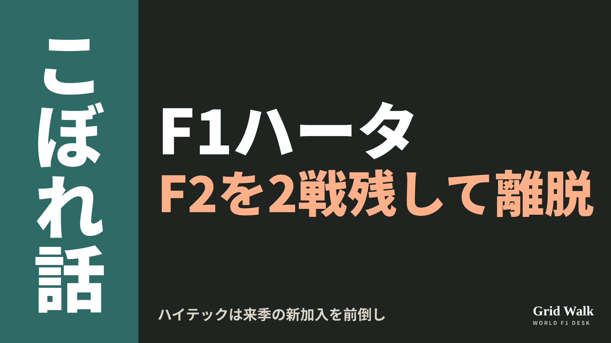<button class="cp dl" data-img="img/x_herta-leaves-f2-early-20261124.png" data-name="x_herta-leaves-f2-early-20261124.png">ダウンロード</button></li>
<li class="st"><div class="hd"><b>① noteをシェアするときの文</b></div><div class="bx" id="p6x0">ハータが、F2の最後の2ラウンドを前にハイテックを離れます。双方の合意によるものです。キャデラックのタウリスCEOは、ハータは方向を決めたのだと思うと話しています。noteにまとめました #F1jp #ハータ #キャデラック</div><button class="cp" data-plain="p6x0">コピー</button></li>
<li class="st"><div class="hd"><b>② ①への返信</b></div><div class="bx" id="p6x1">ほかの海外記事も読みたい方は、F1 Grid Walkへ。
https://f1gridwalk.github.io/lens/herta-leaves-f2-early-20261124/?utm_source=x&amp;utm_campaign=herta-leaves-f2-early-20261124</div><button class="cp" data-plain="p6x1">コピー</button></li>
<li class="st"><div class="hd"><b>③ ②への返信</b></div><div class="bx" id="p6x2">毎日の海外F1ニュースは、日本語でこちらにまとめています。
https://f1gridwalk.github.io/</div><button class="cp" data-plain="p6x2">コピー</button></li>
</ol></section><section class="part" id="p7"><h2><span class="tag">OFF GRID</span>ラッセル「喜んでマックスと組むよ」　無線に返事なし</h2><p class="sub">サイトに公開：11:52</p><ol class="steps">
<li class="st im"><div class="hd"><span class="no">1</span><b>見出し画像</b><em>画像</em></div>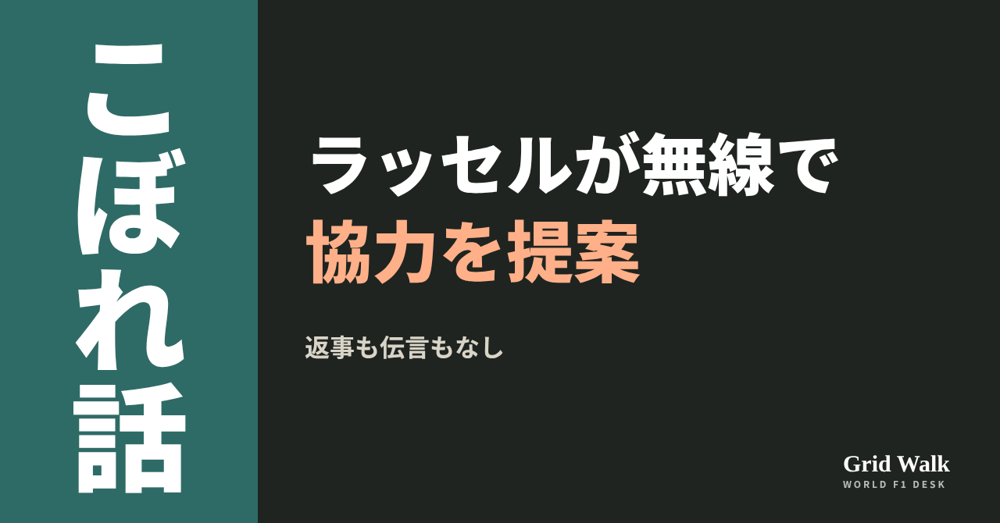<button class="cp dl" data-img="img/russell-cooperation-radio-20261124.png" data-name="russell-cooperation-radio-20261124_見出し画像.png">ダウンロード</button></li>
<li class="st"><div class="hd"><span class="no">2</span><b>タイトル</b></div><div class="bx" id="p7t">ラッセル「喜んでマックスと組むよ」　無線に返事なし</div><button class="cp" data-plain="p7t">タイトルをコピー</button></li>
<li class="st"><div class="hd"><span class="no">3</span><b>本文</b></div><div class="bx tall" id="p7r"><p>第21戦ラスベガスGPの決勝、11周目。メルセデスのジョージ・ラッセルは、先頭を争っていたレッドブルのマックス・フェルスタッペンについて、チーム無線で思いがけない提案をしていました。イギリスのRaceFansとイタリアのFormula1.itが11月23日に伝えています。Formula1.itの記事の要約は https://f1gridwalk.github.io/news/it-formula1it-russell-offre-collaborazione/ にあります。</p><p>FP3の接触のあとの言葉と、決勝後のフェルスタッペンの言葉を伝えたコラムへの案内はサイトで → <a href="https://f1gridwalk.github.io/lens/russell-cooperation-radio-20261124/?utm_source=note&amp;utm_campaign=russell-cooperation-radio-20261124">https://f1gridwalk.github.io/lens/russell-cooperation-radio-20261124/?utm_source=note&amp;utm_campaign=russell-cooperation-radio-20261124</a></p><blockquote><p>「よし、喜んでマックスと組むよ。それで集団から抜け出せるならね」「だから、彼が抜きつ抜かれつをやりたいなら、やろう。でも、守りはなしだ」（ラッセル、チーム無線、RaceFans／イギリス）</p></blockquote><h2>3番手を引き離すために</h2><p>Formula1.itによると、このとき1位と2位を走っていたのはこの2人で、3番手のアイザック・ハジャーを引き離そうとしていました。ラッセルの呼びかけは、2台で先頭を入れ替えながら走り、抜かれても無理に守らず、後ろとの差を広げることを先に考えよう、というものです。</p><p>同じ記事は、この話をラスベガスGPの興味深い舞台裏と紹介し、提案は実を結ばなかったと書いています。</p><h2>返事も伝言もなし</h2><p>RaceFansによると、ラッセルを担当するレースエンジニアのマーカス・ダドリーはこの無線に応えず、フェルスタッペンのレースエンジニアのトム・ハートも、この話をフェルスタッペンに伝えませんでした。Formula1.itも、2人のエンジニアのどちらもこの言葉を受けて動かなかったと書いています。ハートがアメリカGPで初めてフェルスタッペンのレースエンジニアを務めたことは、10月26日のコラム https://f1gridwalk.github.io/lens/tom-hart-debut-20261026/ で紹介しました。</p><p>決勝はフェルスタッペンが勝ちました。ラッセルは2位を取り戻そうとアンドレア・キミ・アントネッリを抜きにいってバリアにぶつかり、F1公式の結果では9位、2点です。3番手にいたハジャーは、セーフティカーの間に必要以上にゆっくり走ったとして10秒加算を受け、15位でした（F1公式）。</p><h2>決勝の前には、言い合い</h2><p>この提案が意外に受け止められたのは、2人の関係があったからです。FP3でフェルスタッペンがラッセルと接触し、スチュワードから警告を受けました（Formula1.it）。ラッセルが予選のあとに何を話したかは、11月22日のコラム https://f1gridwalk.github.io/lens/verstappen-russell-front-row-20261122/ で、決勝のあとのフェルスタッペンの言葉は、11月23日のコラム https://f1gridwalk.github.io/lens/verstappen-russell-far-below-20261123/ で紹介しました。</p><p>Formula1.itは、2人の争いはますます熱くなっていて、協力の提案がそこに面白みを加えたと結んでいます。F1公式の順位では、フェルスタッペンが304点で2位、ラッセルは264点で4位（5位のランド・ノリスも同じ264点）です。残りは11月27〜29日の第22戦カタールGPと、12月4〜6日の第23戦アブダビGPの2戦です。</p><p>編集部としては、この無線は、コースの外の言い合いとは切り離して、まず後ろとの差を考えたラッセルの割り切りがよく出た場面だと見ています。ただ、どちらのエンジニアからも返事がないまま終わったことも、いまの2人の距離を表していそうです。今季のラッセルは、読み解き https://f1gridwalk.github.io/topics/russell-next-year-we-fight-again/ で。</p><p><strong>先頭を争う相手に、無線で協力を呼びかけたラッセル。あなたがフェルスタッペンの側なら、この提案に乗りますか？</strong></p><p>━━━━━━━━━━</p><p><strong>F1 Grid Walk では、世界のF1ニュースを毎日日本語でまとめています。</strong></p><p>海外の記事の要約を、毎日載せています。</p><p><a href="https://f1gridwalk.github.io/">https://f1gridwalk.github.io/</a></p><p>ほかの海外記事も読みたい方は、F1 Grid Walkへ。</p><p><a href="https://f1gridwalk.github.io/lens/russell-cooperation-radio-20261124/">https://f1gridwalk.github.io/lens/russell-cooperation-radio-20261124/</a></p><p>━━━━━━━━━━</p><p><a href="https://www.formula1.it/news/34190/1/russell-spiazza-tutti-e-propone-un-patto-a-verstappen-collaboriamo">出典：Formula1.it（イタリア）</a></p><p><a href="https://www.racefans.net/2026/11/23/russell-offered-to-co-operate-with-verstappen-during-las-vegas-grand-prix/">出典：RaceFans（イギリス）</a></p><p><a href="https://www.formula1.com/en/results/2026/races/1300/las-vegas/race-result">出典：F1公式サイト（イギリス）</a></p><p><a href="https://www.formula1.com/en/results/2026/drivers">出典：F1公式サイト（イギリス）</a></p><p><a href="https://www.formula1.com/en/racing/2026">出典：F1公式サイト（イギリス）</a></p></div><button class="cp" data-rich="p7r">本文をコピー</button></li>
<li class="st"><div class="hd"><span class="no">4</span><b>ハッシュタグ</b></div><div class="bx" id="p7h">#F1 #F1jp #ラッセル #フェルスタッペン #メルセデス #レッドブル #チーム無線 #ラスベガスGP #F1こぼれ話 #OFFGRID</div><button class="cp" data-plain="p7h">タグをコピー</button></li>
</ol><h3 class="xh">X</h3><ol class="steps">
<li class="st im"><div class="hd"><b>X用の画像</b><em>画像</em></div>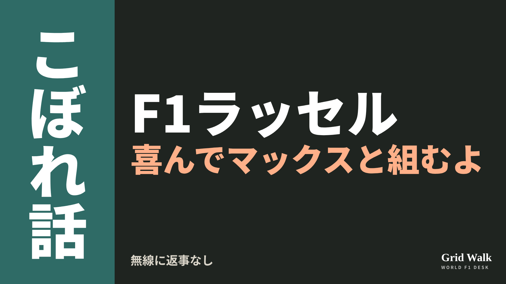<button class="cp dl" data-img="img/x_russell-cooperation-radio-20261124.png" data-name="x_russell-cooperation-radio-20261124.png">ダウンロード</button></li>
<li class="st"><div class="hd"><b>① noteをシェアするときの文</b></div><div class="bx" id="p7x0">ラスベガスGPの11周目、ラッセルが無線で「喜んでマックスと組むよ」。3番手を引き離そうという提案でしたが、どちらのエンジニアも応えませんでした。noteにまとめました #F1jp #ラッセル #フェルスタッペン</div><button class="cp" data-plain="p7x0">コピー</button></li>
<li class="st"><div class="hd"><b>② ①への返信</b></div><div class="bx" id="p7x1">ほかの海外記事も読みたい方は、F1 Grid Walkへ。
https://f1gridwalk.github.io/lens/russell-cooperation-radio-20261124/?utm_source=x&amp;utm_campaign=russell-cooperation-radio-20261124</div><button class="cp" data-plain="p7x1">コピー</button></li>
<li class="st"><div class="hd"><b>③ ②への返信</b></div><div class="bx" id="p7x2">毎日の海外F1ニュースは、日本語でこちらにまとめています。
https://f1gridwalk.github.io/</div><button class="cp" data-plain="p7x2">コピー</button></li>
</ol></section><section class="part" id="p8"><h2><span class="tag">OFF GRID</span>フェルスタッペン、勝ったベガスを「マリオカート」にたとえる</h2><p class="sub">サイトに公開：11:53</p><ol class="steps">
<li class="st im"><div class="hd"><span class="no">1</span><b>見出し画像</b><em>画像</em></div>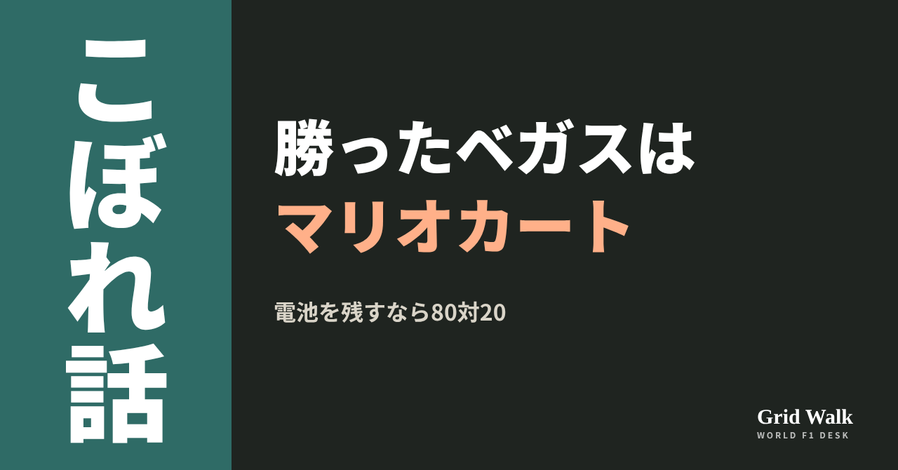<button class="cp dl" data-img="img/verstappen-mario-kart-20261124.png" data-name="verstappen-mario-kart-20261124_見出し画像.png">ダウンロード</button></li>
<li class="st"><div class="hd"><span class="no">2</span><b>タイトル</b></div><div class="bx" id="p8t">フェルスタッペン、勝ったベガスを「マリオカート」にたとえる</div><button class="cp" data-plain="p8t">タイトルをコピー</button></li>
<li class="st"><div class="hd"><span class="no">3</span><b>本文</b></div><div class="bx tall" id="p8r"><p>第21戦ラスベガスGPを勝ったレッドブルのマックス・フェルスタッペンは、決勝のあとのFIAの記者会見で、これほど荒れたレースに最後に勝ったのはいつかと聞かれ、テレビゲームの名前を出しました。イタリアのMotorionlineが11月23日に伝えています。</p><p>イタリアの元記事へのリンクと、追い抜き352回を追ったコラムはサイトで → <a href="https://f1gridwalk.github.io/lens/verstappen-mario-kart-20261124/?utm_source=note&amp;utm_campaign=verstappen-mario-kart-20261124">https://f1gridwalk.github.io/lens/verstappen-mario-kart-20261124/?utm_source=note&amp;utm_campaign=verstappen-mario-kart-20261124</a></p><blockquote><p>「こういうレースに勝った覚えがあるのは、マリオカートをやっていたときだね」（フェルスタッペン、FIAの記者会見、Motorionline／イタリア）</p></blockquote><p>Motorionlineによると、決勝では追い抜きが352回、首位の入れ替わりが35回ありました。F1公式の結果では、フェルスタッペンが優勝、2位はマクラーレンのランド・ノリスです。サイトの要約は https://f1gridwalk.github.io/news/it-motorionline-verstappen-mario-kart/ にあります。</p><p>同じ記事によると、ドイツの大衆紙ビルトはこのレースを、LSDでも使ったようなマリオカートにたとえていました。Motorionlineは、フェルスタッペン自身がこのたとえを皮肉まじりに持ち出した、と書いています。</p><h2>下がるたびに、速くなる</h2><p>Motorionlineは、順位がこれほど入れ替わった理由を、スリップストリームと電気エネルギーの使い方にあると書いています（用語は https://f1gridwalk.github.io/deep/rules/slipstream/ と https://f1gridwalk.github.io/deep/rules/energy-management/ で）。フェルスタッペンは、その仕組みをこう話しています。</p><blockquote><p>「ときどき順位を落として、そのあとスリップストリームを使う。まるで自動で取り戻せるような感じなんだ」「下がるたびに、速くなるんだよ」（フェルスタッペン、Motorionline／イタリア）</p></blockquote><p>体の負担は小さかったそうです。</p><blockquote><p>「心拍数でさえ、それほど高くなかった」（フェルスタッペン、Motorionline／イタリア）</p></blockquote><p>流して走っているようだったという話は https://f1gridwalk.github.io/lens/mekies-verstappen-on-purpose-20261123/ で。一方、Viaplayには不満も口にしています。</p><blockquote><p>「最初にゴールできたのはうれしい。でも、もちろん、これはどれもF1とは関係がない」（フェルスタッペン、Viaplay、Motorionline／イタリア）</p></blockquote><p>2位のノリスも、こう話しています。</p><blockquote><p>「最高のレースをして勝てるチャンスがあるのか、それとも最下位で終わるのか、分からなかった」（ノリス、Motorionline／イタリア）</p></blockquote><p>Motorionlineは、追い抜きの多さが、そのまま実力の差を映していたとは限らないと書いています。追い抜きの記録はコラム https://f1gridwalk.github.io/lens/vegas-overtake-record-20261123/ で。</p><h2>60対40では、手直しにすぎない</h2><p>注文は、2027年と2028年に考えられている規則の変更にも向いています。</p><blockquote><p>「今の形から60対40の割合にしても、それは製品をちょっと手直しするだけだ」「電池を残したいなら、普通に近づけるには少なくとも80対20の割合が要る」（フェルスタッペン、Motorionline／イタリア）</p></blockquote><p>その先に望みをかけているのは2030年です。</p><blockquote><p>「2030年が全部、少なくとも問題の大半を解決してくれることを願うだけだ」（フェルスタッペン、Motorionline／イタリア）</p></blockquote><p>Motorionlineは、この言葉を2030年のV8エンジンの復活と結びつけて伝えています。V8については、FIAが11月20日、2030年からの枠組みに全会一致で合意したと発表しました（世界モータースポーツ評議会の承認が条件）。これまでの動きは https://f1gridwalk.github.io/lens/v8-engine-proposal-20261117/ と https://f1gridwalk.github.io/deep/rules/v8-era/ で。</p><p>編集部としては、勝った本人がゲームにたとえたところに、今の規則への違和感の大きさが表れていると見ています。1位と2位がそろって、手応えをつかみにくかったと話しているからです。次は11月27〜29日の第22戦カタールGPです。</p><p><strong>抜かれても次の直線で取り返せるラスベガスの決勝。あなたはF1らしいレースだったと思いますか、それともゲームのようだったと思いますか？</strong></p><p>━━━━━━━━━━</p><p><strong>F1 Grid Walk では、世界のF1ニュースを毎日日本語でまとめています。</strong></p><p>海外の記事の要約を、毎日載せています。</p><p><a href="https://f1gridwalk.github.io/">https://f1gridwalk.github.io/</a></p><p>ほかの海外記事も読みたい方は、F1 Grid Walkへ。</p><p><a href="https://f1gridwalk.github.io/lens/verstappen-mario-kart-20261124/">https://f1gridwalk.github.io/lens/verstappen-mario-kart-20261124/</a></p><p>━━━━━━━━━━</p><p><a href="https://f1grandprix.motorionline.com/verstappen-f1-gp-las-vegas-mario-kart/">出典：Motorionline（イタリア）</a></p><p><a href="https://www.fia.com/news/v8-future-unanimous-agreement-reached-fias-2030-formula-1-power-unit-framework">出典：FIA（国際）</a></p><p><a href="https://www.formula1.com/en/results/2026/races/1300/las-vegas/race-result">出典：F1公式サイト（イギリス）</a></p><p><a href="https://www.formula1.com/en/racing/2026">出典：F1公式サイト（イギリス）</a></p></div><button class="cp" data-rich="p8r">本文をコピー</button></li>
<li class="st"><div class="hd"><span class="no">4</span><b>ハッシュタグ</b></div><div class="bx" id="p8h">#F1 #F1jp #フェルスタッペン #レッドブル #ラスベガスGP #マリオカート #F1こぼれ話 #OFFGRID</div><button class="cp" data-plain="p8h">タグをコピー</button></li>
</ol><h3 class="xh">X</h3><ol class="steps">
<li class="st im"><div class="hd"><b>X用の画像</b><em>画像</em></div>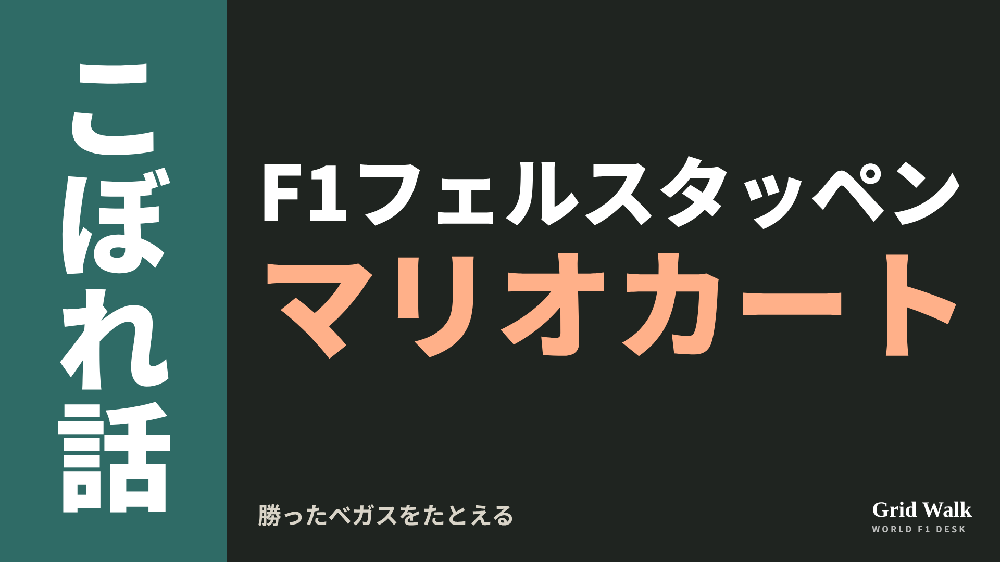<button class="cp dl" data-img="img/x_verstappen-mario-kart-20261124.png" data-name="x_verstappen-mario-kart-20261124.png">ダウンロード</button></li>
<li class="st"><div class="hd"><b>① noteをシェアするときの文</b></div><div class="bx" id="p8x0">追い抜き352回のラスベガスGPを勝ったフェルスタッペンが、記者会見で「マリオカート」の名前を出しました。今の規則にも不満を話しています。noteにまとめました #F1jp #フェルスタッペン</div><button class="cp" data-plain="p8x0">コピー</button></li>
<li class="st"><div class="hd"><b>② ①への返信</b></div><div class="bx" id="p8x1">ほかの海外記事も読みたい方は、F1 Grid Walkへ。
https://f1gridwalk.github.io/lens/verstappen-mario-kart-20261124/?utm_source=x&amp;utm_campaign=verstappen-mario-kart-20261124</div><button class="cp" data-plain="p8x1">コピー</button></li>
<li class="st"><div class="hd"><b>③ ②への返信</b></div><div class="bx" id="p8x2">毎日の海外F1ニュースは、日本語でこちらにまとめています。
https://f1gridwalk.github.io/</div><button class="cp" data-plain="p8x2">コピー</button></li>
</ol></section></main><script>
function done(b,msg){const t=b.dataset.t||b.textContent;b.dataset.t=t;b.classList.add('ok');b.textContent=msg||'コピーしました';setTimeout(()=>{b.classList.remove('ok');b.textContent=t},2000)}
function selectEl(el){const r=document.createRange();r.selectNodeContents(el);const s=getSelection();s.removeAllRanges();s.addRange(r)}
async function rich(el,b){
  try{await navigator.clipboard.write([new ClipboardItem({'text/html':new Blob([el.innerHTML],{type:'text/html'}),'text/plain':new Blob([el.innerText],{type:'text/plain'})})]);done(b);return}catch(e){}
  selectEl(el);let ok=false;try{ok=document.execCommand('copy')}catch(e){}
  if(ok){getSelection().removeAllRanges();done(b)}else{done(b,'選択しました。コピーしてください')}}
async function plain(el,b){
  try{await navigator.clipboard.writeText(el.innerText);done(b);return}catch(e){}
  selectEl(el);let ok=false;try{ok=document.execCommand('copy')}catch(e){}
  if(ok){getSelection().removeAllRanges();done(b)}else{done(b,'選択しました。コピーしてください')}}
let dlns=null;(async()=>{try{dlns=await window.claude?.use?.("downloads")}catch(e){dlns=null}})();
async function img(src,b){
  b.dataset.t=b.dataset.t||b.textContent;
  if(!dlns){try{dlns=await window.claude?.use?.("downloads")}catch(e){}}
  if(!dlns){b.textContent='ダウンロードできませんでした';setTimeout(()=>{b.textContent=b.dataset.t},3500);return}
  try{const blob=await fetch(src).then(r=>r.blob());b.textContent='保存の確認を開いています…';
    await dlns.save({filename:b.dataset.name,data:blob});done(b,'ダウンロードしました')}
  catch(e){const c=e&&e.code;b.textContent=c==='declined'?'キャンセルしました':c==='rate_limited'?'少し待ってからもう一度押してください':'ダウンロードできませんでした';setTimeout(()=>{b.textContent=b.dataset.t},3500)}}
document.querySelectorAll('.cp').forEach(b=>b.addEventListener('click',()=>{
  if(b.dataset.rich)rich(document.getElementById(b.dataset.rich),b);
  else if(b.dataset.plain)plain(document.getElementById(b.dataset.plain),b);
  else img(b.dataset.img,b)}));
</script>